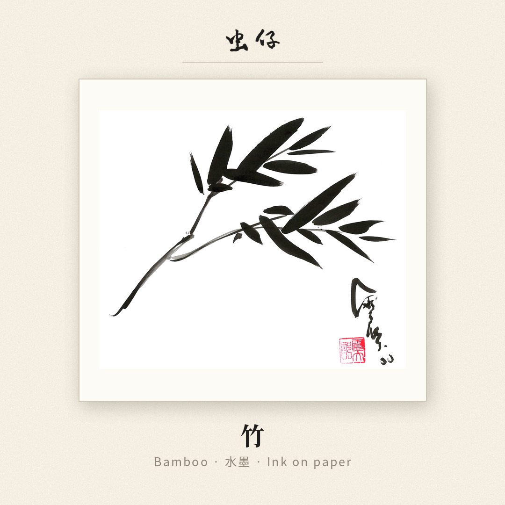
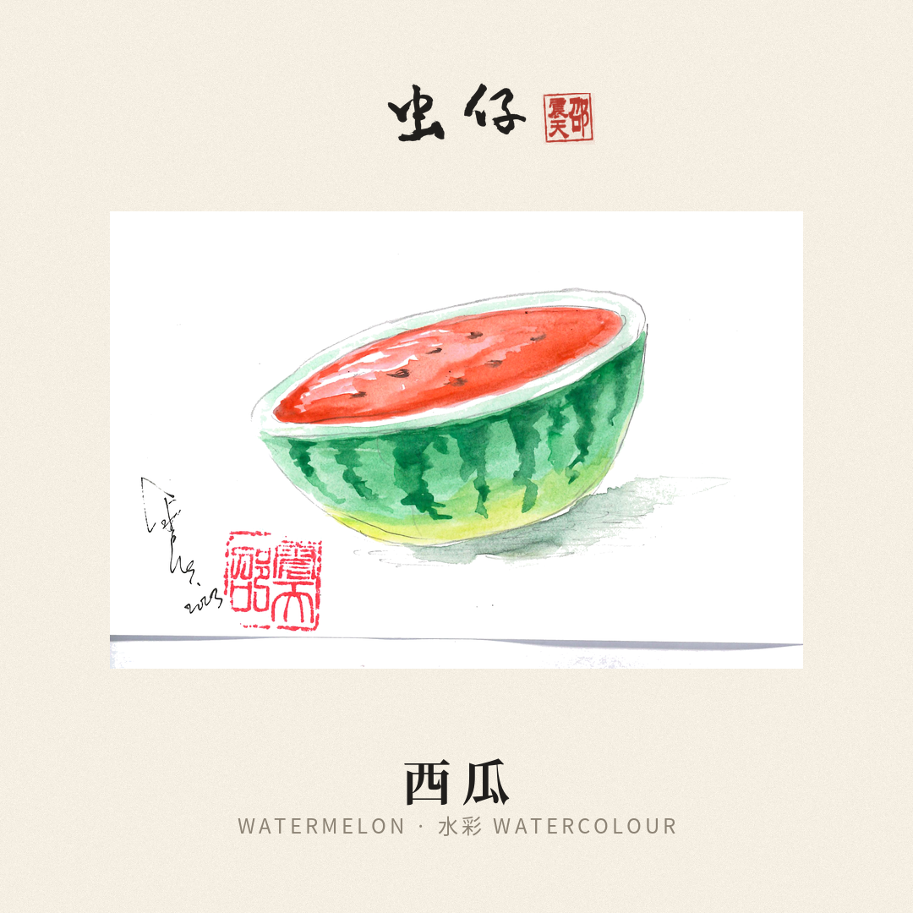
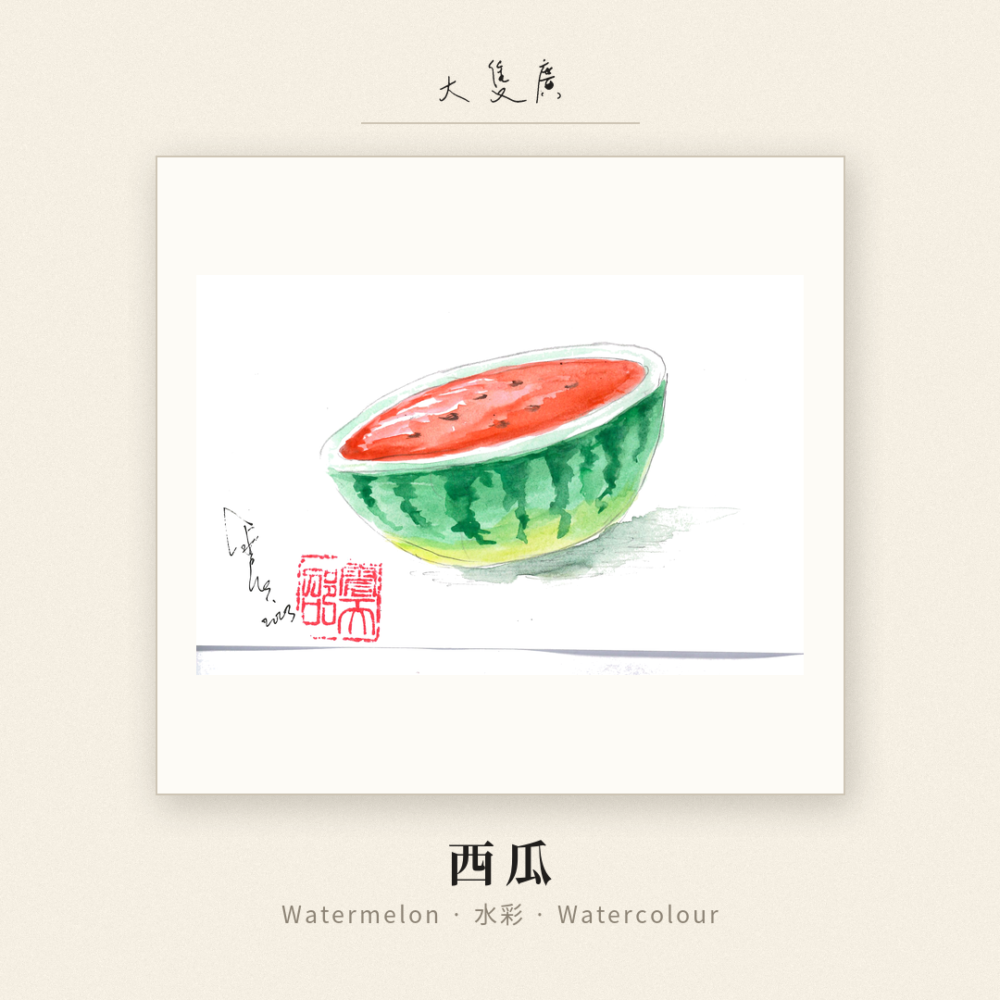
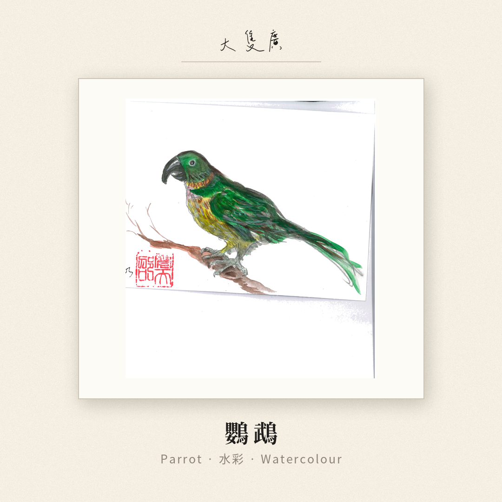
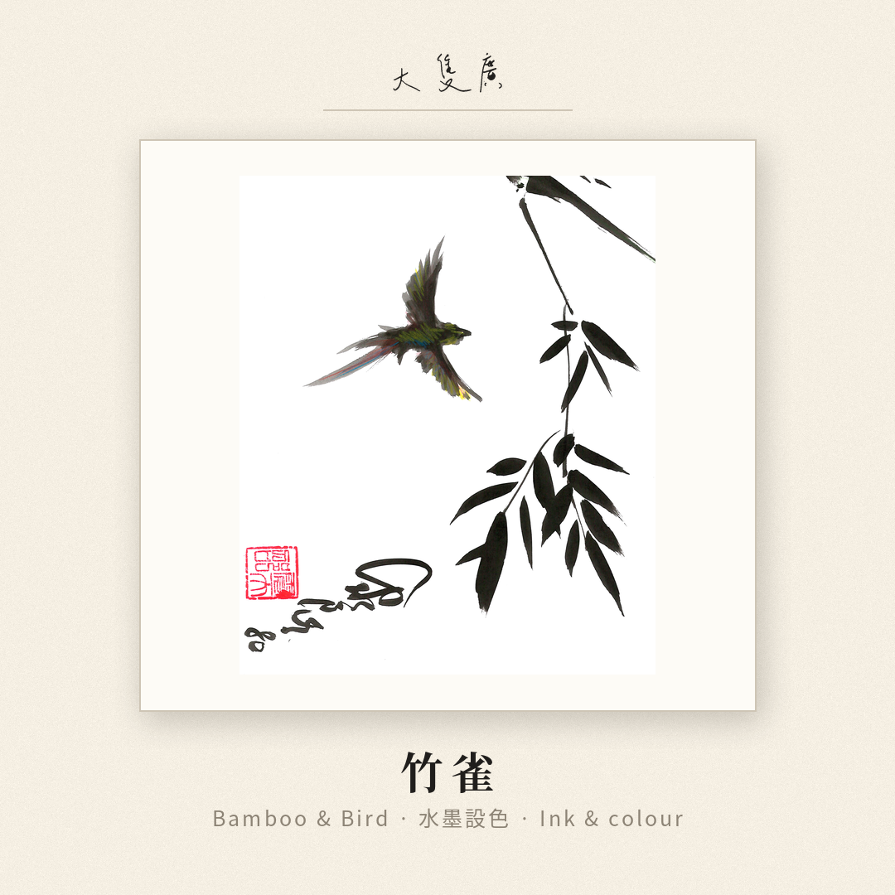
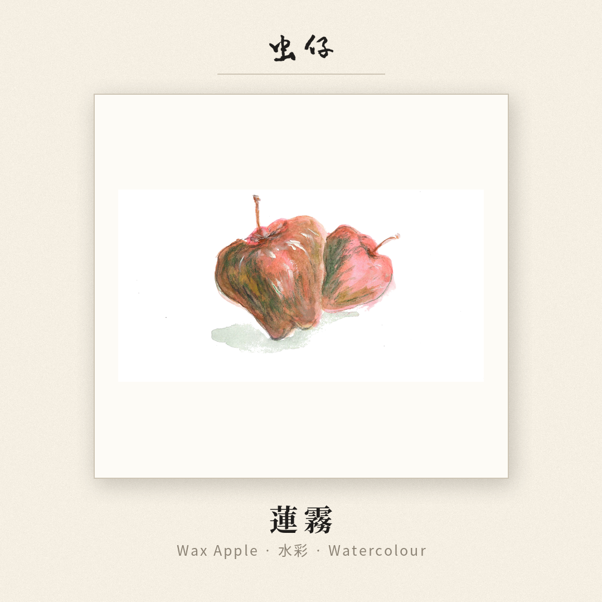
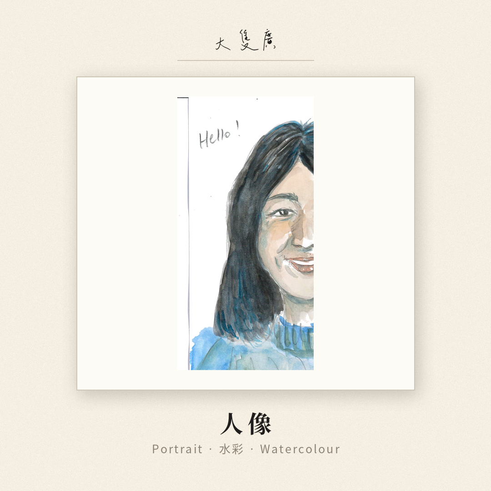
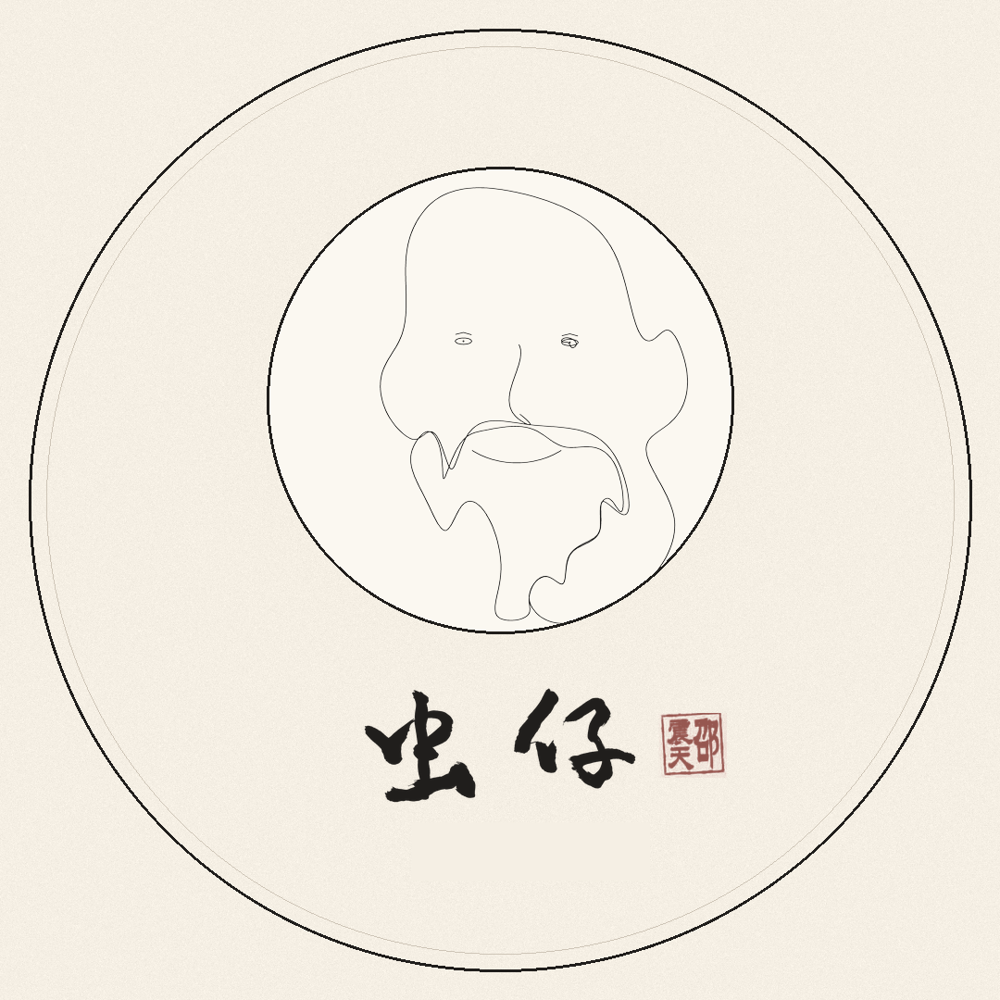
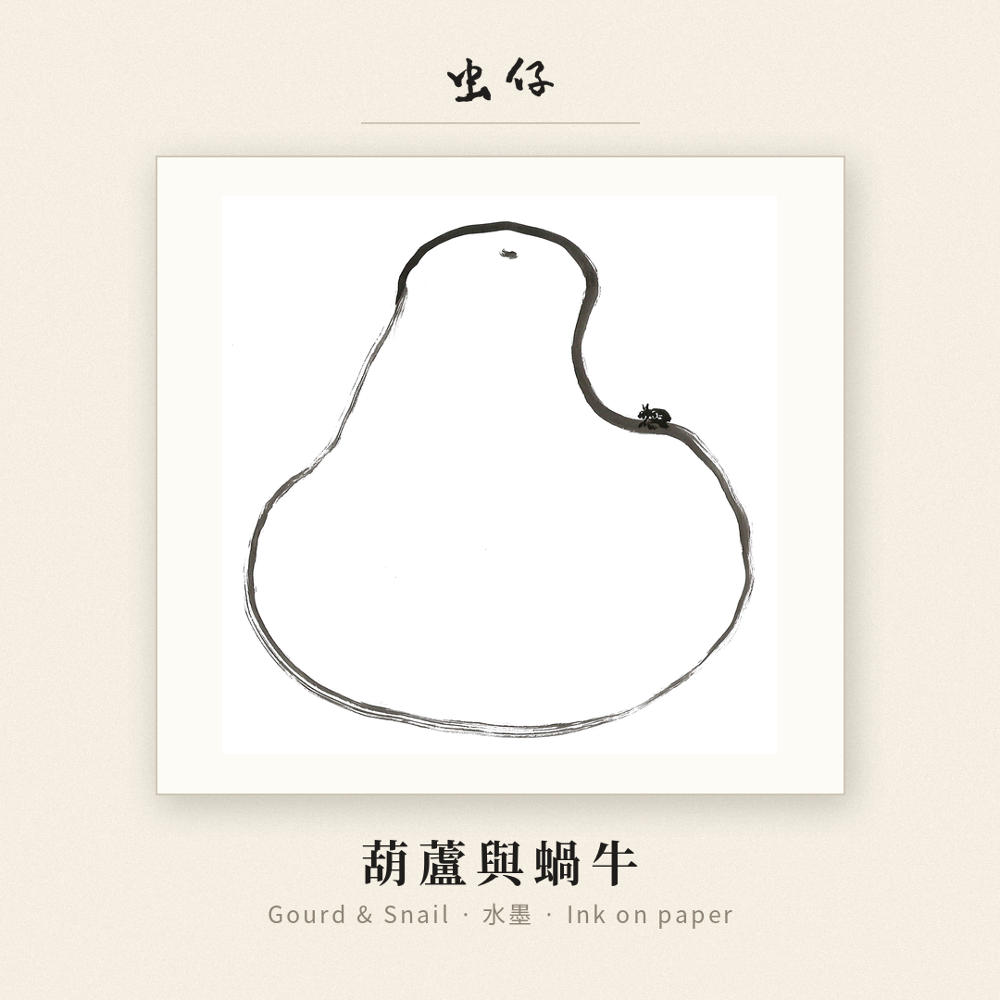
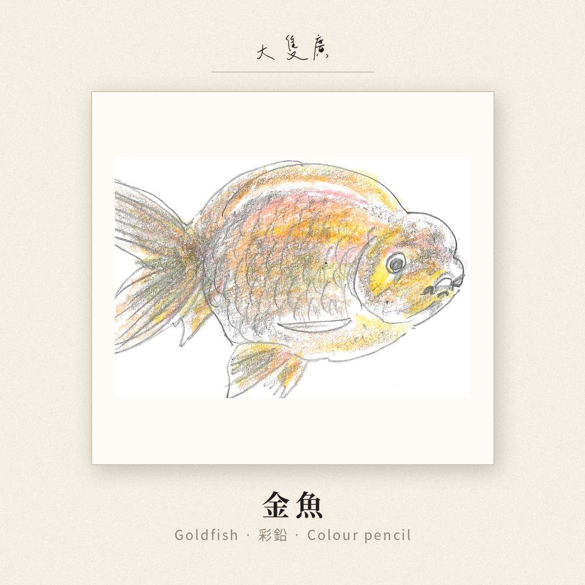

01 · Ink
Bamboo
Expressive brushwork, restraint and movement drawn from the natural world.
Hong Kong Artist
Ink · Watercolour · Illustration

Selected works

Expressive brushwork, restraint and movement drawn from the natural world.

Warm colour, familiar objects and the small pleasures of everyday life.

Playful forms and lively personalities with strong potential for editorial and product applications.
Explore




About the artist
This section is intentionally left flexible so Gary can write in his own voice. It can include his background, influences, working process and what he hopes viewers feel when they encounter his work.
Collaboration
Available for licensing, fashion, packaging, stationery, editorial work, exhibitions and selected commissions.


Contact